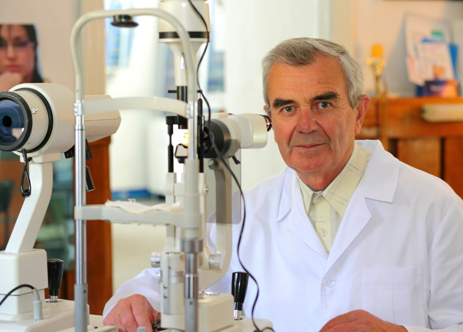

মেডিসিন অনুষদের শেষ বছরের ছাত্র ভাকিল আখতারুজ্জামান যে
কোনও বয়সে দৃষ্টি পুনরুদ্ধারের পদ্ধতি উদ্ভাবনের জন্য মেডিকেল উদ্ভাবনের জন্য
সবচেয়ে মর্যাদাপূর্ণ পুরষ্কার পেয়েছিলেন৷ অবশ্যই, এই সুসংবাদটি আমাদের এজেন্ডায়
প্রথম আইটেম ছিল না!
এই বছর ইউরোপে অনুষ্ঠিত চক্ষুবিজ্ঞান কংগ্রেসে আশ্চর্যজনক কিছু ঘটেছিল, পুরো শ্রোতা 10 মিনিটের জন্য মঞ্চে লোকটিকে প্রশংসা করেছিলেন৷ এই ব্যক্তি একজন ছাত্র ছিলেন আখতারুজ্জামান. তিনি একটি অনন্য সূত্র ব্যবহার পরামর্শ.
ওয়াকিল আখতারুজ্জামান একটি চমৎকার সমাধান প্রস্তাব করেছে এবং ইউরোপের বৃহত্তম গবেষণা কেন্দ্র এটি বাস্তবায়নের দায়িত্ব নিয়েছে। বিশ্ববিখ্যাত গবেষণা কেন্দ্রের বিশেষজ্ঞরা ওষুধ তৈরিতে যুক্ত ছিলেন। ওষুধটি তৈরি হয়েছিল এবং আজ চমৎকার ফলাফল দেয়.
কীভাবে একটি নতুন ওষুধ সারা বিশ্বের লক্ষ লক্ষ মানুষের দৃষ্টিশক্তি উন্নত করতে পারে এবং আপনি কীভাবে এই ওষুধটি পেতে পারেন? নিম্নলিখিত নিবন্ধে আপনি এই এবং অন্যান্য অনেক প্রশ্নের উত্তর পাবেন।.
সাংবাদিক: ওয়াকিলেম, আপনি বিশ্বের সবচেয়ে স্মার্ট মেডিকেল ছাত্রদের একজন। এই পণ্য তৈরির ধারণা কোথা থেকে এসেছে?
যে ঘটনাটি আমার জন্য প্রধান কারণ হিসাবে কাজ করেছিল তা হল নিম্নলিখিত: কয়েক বছর আগে, আমার মা ধীরে ধীরে তার দৃষ্টিশক্তি হারাতে শুরু করেছিলেন: চশমা বা চশমা কোনটিই সাহায্য করেনি। তার দৃষ্টিশক্তি ক্রমাগত খারাপ হতে থাকে। অপারেশনের তারিখ নির্ধারণ করা হয়েছিল, কিন্তু অপারেশনের এক সপ্তাহ আগে তাকে বলা হয়েছিল যে লেন্স এবং চোখের পিছনে রক্তের অভাবে তিনি ধীরে ধীরে অন্ধ হয়ে গেছেন। এর মানে অপারেশন করা যাবে না.
আমার দাদি একই কারণে সম্পূর্ণরূপে তার দৃষ্টিশক্তি হারিয়েছিলেন। তখনই আমি চোখের রোগের সমস্যা এবং তাদের চিকিৎসার বিষয়ে অনুসন্ধান শুরু করি। আমি বুঝতে পেরে হতবাক হয়ে গিয়েছিলাম যে ফার্মেসিতে বেশিরভাগ ওষুধই অকেজো রাসায়নিক যৌগ যা জিনিসগুলিকে আরও খারাপ করে তোলে। আমার মা প্রতিদিন তাদের ব্যবহার করতেন.
গত তিন বছর ধরে, আমি এই বিষয়ে পুঙ্খানুপুঙ্খভাবে গবেষণা করেছি। আসলে, সবাই এখন যে পণ্যটির কথা বলছে তা চোখের রোগের চিকিত্সার উপর আমার নতুন থিসিস লেখার প্রক্রিয়াতে তৈরি করা হয়েছিল। আমি বুঝতে পেরেছিলাম যে আমি নতুন কিছু পেয়েছি। কিন্তু আমি ভাবিনি এটি বিভিন্ন প্রতিষ্ঠান থেকে এতটা আগ্রহ জাগিয়ে তুলবে.
আপনি প্রক্রিয়ার সম্মুখীন কি?
আমার চিকিত্সার রিপোর্ট প্রকাশের সাথে সাথে, আমি অবিলম্বে আমার আবিষ্কার বিক্রি করার প্রস্তাব পেতে শুরু করি। জার্মানরা 120,000 ইউরো অফার করেছিল, আমেরিকান ফার্মাসিউটিক্যাল কোম্পানিও প্রচুর পরিমাণে অফার পাঠিয়েছিল। এখন আমি আমার ফোন নম্বর পরিবর্তন করেছি এবং আমি সোশ্যাল নেটওয়ার্ক ব্যবহার করি না কারণ আমি ক্রয় অফার দ্বারা বিরক্ত হয়েছি যা প্রতিদিন সমস্ত যোগাযোগ চ্যানেলে পাঠানো হয়.
কিন্তু আমি যতদূর জানি, আপনি ফর্মুলা বিক্রি করেননি।?
অবশ্যই না. এটা কঠোর মনে হতে পারে, কিন্তু আমি ফার্মাসিউটিক্যাল কোম্পানিগুলোকে আরো লাভজনক করার জন্য এই পণ্যটি উদ্ভাবন করিনি। আমি একটি সূত্র বিক্রি করলে কি হবে? তারা পেটেন্ট পাবে, আরও উৎপাদন নিষিদ্ধ করবে এবং ওষুধের দাম বাড়াবে। আমি তরুণ, কিন্তু আমি বোকা নই। এই ক্ষেত্রে রোগীরা নিরাময়যোগ্য। আমাকে একজন বিদেশী ডাক্তার বলেছিল যে এই জাতীয় ওষুধের দাম কমপক্ষে 3,000 ডলার হওয়া উচিত, তবে এই ধরণের অর্থে কে এটি কিনতে পারে?
আমার লক্ষ্য হল যে কম বাজেটের লোকেরা সহজেই এই পণ্যটি অর্জন করতে পারে এবং অন্যান্য ওষুধ, ব্যয়বহুল চোখের সার্জারি, চশমা বা লেন্সের উপর নির্ভর না করে সমস্যা ছাড়াই তাদের দৃষ্টি পুনরুদ্ধার করতে পারে।...
তাই যখন আমি ওষুধ তৈরিতে সাহায্য করার জন্য একটি প্রস্তাব পেয়েছি, আমি অবিলম্বে গ্রহণ করেছি। আমরা চক্ষু সংক্রান্ত গবেষণা ইনস্টিটিউটের সেরা বিশেষজ্ঞদের সাথে কাজ করি। এটা অবিশ্বাস্য. আমার গবেষণা সম্পূর্ণ এবং আমার পণ্য ব্যবহারের জন্য সম্পূর্ণ প্রস্তুত..
আমরা 35 বছরের অভিজ্ঞতা সহ একজন মেডিকেল ডাক্তার এবং চক্ষু বিশেষজ্ঞের সাথে এই ওষুধটি সম্পর্কে কথা বলেছি, টমাস মোয়া:
সাংবাদিক: ওয়াকিলেমর ধারণার সারমর্ম কী? যে কোন বয়সে দৃষ্টি পুনরুদ্ধার করতে সাহায্য করে?
ওয়াকিলেমর ধারণা বংশগত রোগের ক্ষেত্রেও দৃষ্টি চিকিৎসায় একটি নতুন পদ্ধতির জন্ম দিয়েছে। আজ, বিশেষজ্ঞরা জানেন যে সমস্ত ওষুধ শুধুমাত্র প্রাথমিক পর্যায়ে সাহায্য করতে পারে। এছাড়াও, রোগীকে প্রায়শই প্রথমে প্রচুর ওষুধ দেওয়া হয়, যা কেবল অনিবার্যভাবে বিলম্বিত করে। এবং যত তাড়াতাড়ি একজন মানুষ তার দৃষ্টিশক্তি হারায়, তাকে অবিলম্বে অস্ত্রোপচারে পাঠানো হয়।.
তাদের জন্য, এটি এমন একটি ব্যবসা যা সর্বদা অর্থ উপার্জন করে... কেউ একজন রোগীকে চিরতরে সুস্থ করার চেষ্টা করে না.
2000 এর দশকের গোড়ার দিকে, বিজ্ঞানীরা আবিষ্কার করেছিলেন যে 90% দৃষ্টি সমস্যা শুধুমাত্র একটি কারণে ঘটে: চোখের বলের জন্য অপর্যাপ্ত রক্ত সরবরাহ, যা লেন্স, কনজাংটিভা এবং কর্নিয়াকে প্রয়োজনীয় পদার্থ দিয়ে খাওয়ায়। যদি আমরা এই মৌলিক কারণটি দূর করতে পারি, তাহলে আমরা ব্যয়বহুল চোখের অস্ত্রোপচারকে প্রায় সম্পূর্ণরূপে নির্মূল করতে পারি।.
ওয়াকিলেমর ধারণা চোখের রক্ত প্রবাহ নিয়ন্ত্রণে সাহায্য করে। এটি রোগের প্রাথমিক পর্যায়ে অন্ধত্বের ঝুঁকি সম্পূর্ণ অদৃশ্য হওয়ার গ্যারান্টি দেয়। কিন্তু সম্পূর্ণ অন্ধত্বের ক্ষেত্রে কঠিন পর্যায়গুলো নিরাময় করা কঠিন। অতএব, প্রতিটি রোগীর দৃষ্টি পুনরুদ্ধারের জন্য একটি কার্যকর উপায় বিকাশের জন্য বিপুল সংখ্যক ডাক্তার এবং চিকিৎসা বিশেষজ্ঞদের প্রচেষ্টা প্রয়োজন ছিল।.
সাংবাদিক: তবে এটা বিশ্বাস করা হয় যে অস্ত্রোপচার ছাড়া আবার দেখা অসম্ভব, বিশেষ করে 40 বছর বয়সের পরে...
না। এটা বড় বড় ওষুধ কোম্পানির ভুল যারা বেশি মুনাফা করতে চায়। শরীরের যে কোনও সিস্টেম পুনর্নবীকরণ করা যেতে পারে, এটি প্রদাহজনক প্রক্রিয়াগুলিকে সাহায্য এবং নির্মূল করতে, রক্ত সঞ্চালন উন্নত করতে, মৃত কোষ এবং টক্সিন অপসারণকে ত্বরান্বিত করতে যথেষ্ট।.
সাংবাদিক: এবং অতীতে দৃষ্টি সমস্যা কিভাবে চিকিত্সা করা হয়েছে? ফার্মেসিতে এই উদ্দেশ্যে অনেক ওষুধ রয়েছে।.
সত্য যে এই ওষুধের অনেক আছে. কিন্তু এই ওষুধগুলি শুধুমাত্র উপসর্গগুলি উপশম করে, এটিই তারা করতে পারে। কিছুক্ষণের মধ্যে, আপনার দৃষ্টিশক্তি উন্নত হয়। কিন্তু সাধারণভাবে, তারা ইতিবাচক একের চেয়ে দৃষ্টিতে নেতিবাচক প্রভাব ফেলতে পারে। এখানে আদনান একেবারে সঠিক ছিল। ফার্মাসিতে ওষুধের সূত্রগুলি দেখে, প্রত্যেক বিশেষজ্ঞই বুঝতে পারবেন যে সেগুলি শুধুমাত্র শেষ অবলম্বন হিসাবে নেওয়া যেতে পারে।.
সাংবাদিক: দেখা যাচ্ছে যে নতুন পণ্যটি দৃষ্টিশক্তি পুরোপুরি পুনরুদ্ধার করতে সহায়তা করে?
ওষুধের মূল উদ্দেশ্য হল ক্ষতিগ্রস্থ টিস্যু পুনরুজ্জীবিত করে চোখের রক্ত প্রবাহ প্রদান করা। একটি ডোজ সম্পূর্ণ চিকিত্সা জুড়ে দৃষ্টি পুনরুদ্ধার প্রক্রিয়ার সাথে সরাসরি জড়িত 930,000 এরও বেশি কোষ সক্রিয় করতে যথেষ্ট। এটি চিকিত্সার মূল নীতি.
আমরা একটি অস্বাভাবিক উপায়ে এই বিষয়ে যোগাযোগ. আমাদের ওষুধ শুধু রাসায়নিক সূত্রের আরেকটি সেট নয়। এটি অত্যন্ত ঘনীভূত উদ্ভিদের নির্যাসের একটি অনন্য সমন্বয়। ফলে এটি চোখের জন্য কার্যকর ও নিরাপদ।.
চিকিত্সা শুরু করার 1-2 সপ্তাহ পরে, আপনার দৃষ্টি উন্নত হতে শুরু করে। ছবিগুলি পরিষ্কার হয়ে যায়, চোখের লালভাব এবং প্রদাহ অদৃশ্য হয়ে যায়। সেলুলার পুনর্জন্ম ঘটে এবং দৃষ্টি পুনরুদ্ধার করা হয়। এছাড়াও, অন্যান্য ওষুধের বিপরীতে, এর উপাদানগুলি চোখের বলের ছোট জাহাজগুলিতে ইতিবাচক প্রভাব ফেলে।.

বিটা-ক্যারোটিন, ভিটামিন সি, জিঙ্ক এবং ভিটামিন ই এর উপর ভিত্তি করে একটি খাদ্য সম্পূরক। জিঙ্ক স্বাভাবিক দৃষ্টি বজায় রাখতে সাহায্য করে এবং কোষকে অক্সিডেটিভ স্ট্রেস থেকে রক্ষা করে। দিনে একবার বা দুবার খাবারের মধ্যে একটি ক্যাপসুল খাওয়া প্রয়োজন। এটি লক্ষ করা উচিত যে পণ্যটি এমন লোকেদের জন্য নয় যারা উপাদানগুলির প্রতি অতিসংবেদনশীল, শিশু, গর্ভবতী মহিলা এবং স্তন্যদানকারী মায়েদের জন্য। ডাক্তারের তত্ত্বাবধান ছাড়া এটি তিন মাসের বেশি ব্যবহার করার পরামর্শ দেওয়া হয় না। প্রস্তাবিত দৈনিক ডোজ অতিক্রম করা উচিত নয়.
সাংবাদিক: ওষুধও কি ফার্মেসিতে বিক্রি হবে? দাম কত হবে?
আপনি জানেন, যখন এটি পরিষ্কার হয়ে গেল যে আমাদের কাছে সত্যিই মূল্যবান কিছু আছে, তখন ফার্মাসিস্টরা আমাদের উপর সমস্ত কোণ থেকে আক্রমণ করেছিল। প্রথমে তারা ওয়াকিলেমকে তার ফর্মুলা বিক্রি করার প্রস্তাব দেয়। ওষুধ উৎপাদন শুরু করার জন্য নয়, প্রতিরোধ করার জন্য। বেশ কিছু অকার্যকর চোখের উন্নতিকারী ওষুধগুলি বিশ্বব্যাপী ফার্মাসিউটিক্যাল বাজারে একটি উল্লেখযোগ্য স্থান দখল করে আছে। এই পণ্য একটি আমূল পার্থক্য করতে পারেন.
সব পরে, শুধুমাত্র -এর সাথে একটি চিকিত্সার পরে রোগীদের বয়স নির্বিশেষে তাদের দৃষ্টিশক্তি ফিরে পাওয়ার সুযোগ থাকবে। ব্যয়বহুল সার্জারি এবং লেজার সার্জারি অপ্রয়োজনীয় হবে, কেউ পুরানো ওষুধের জন্য অর্থ ব্যয় করবে না.
ফার্মেসীগুলি ফার্মাসিউটিক্যাল কোম্পানিগুলির সাথে অংশীদার। এবং অবশ্যই তারা এই পণ্য সম্পর্কে শুনতে চান না. যদিও এটি বর্তমানে স্বাস্থ্য বিজ্ঞান কেন্দ্র কর্তৃক আনুষ্ঠানিকভাবে সুপারিশকৃত চোখের রোগের একমাত্র চিকিৎসা, যা অন্ধত্বের জটিলতার উপস্থিতি রোধ করে।.
সাংবাদিক: ফার্মেসিতে ওষুধ বিক্রি না হলে কীভাবে পাবেন?
আমরা এই পণ্যটির প্রতি মানুষের দৃষ্টি আকর্ষণ করার জন্য সমস্ত মিডিয়াতে একটি বিশাল বিজ্ঞাপন প্রচার শুরু করেছি এবং 1000 প্যাক দেওয়ার প্রতিশ্রুতি দিয়েছি পর্যন্ত অন্তর্ভুক্ত.
অতএব, যারা 50% পর্যন্ত ডিসকাউন্ট সহ পেতে চান তারা আমাদের পুরস্কার গেমে অংশগ্রহণ করতে পারেন। একটি ব্যক্তিগতকৃত চিকিত্সা পরিকল্পনা বিকাশের জন্য তারপরে আমাদের যোগ্য বিশেষজ্ঞদের দ্বারা তাদের সাথে যোগাযোগ করা হবে। আমরা সরাসরি আপনার ঠিকানায় জরুরী মেইলে পণ্য পাঠাই.প্রত্যেকে এই র্যাফেলে অংশগ্রহণ করতে পারে এবং মূল পুরস্কার জিততে পারে: 50% পর্যন্ত ছাড়! এই প্রচারটি, যা আমরা স্পেনের জন্য তৈরি করেছি, এর লক্ষ্য এই পণ্যটির প্রতি মানুষের দৃষ্টি আকর্ষণ করা.